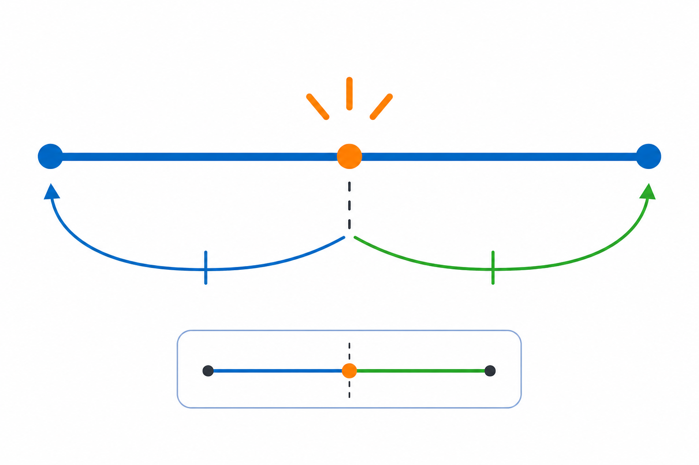

Co to jest? Що це?
Współrzędne środka = średnie współrzędnych końców.
Координати середини = середні координат кінців.
Jak w szkole? Як у школі?
A(2,1), B(6,5) → M(4,3).
A(2,1), B(6,5) → M(4,3).
Przykład z życia Приклад з життя
Odległość na mapie w kratkę. Przykład: M=((x₁+x₂)/2,(y₁+y₂)/2).
Відстань на мапі в клітинку. Приклад: M=((x₁+x₂)/2,(y₁+y₂)/2).
M=((x₁+x₂)/2,(y₁+y₂)/2)